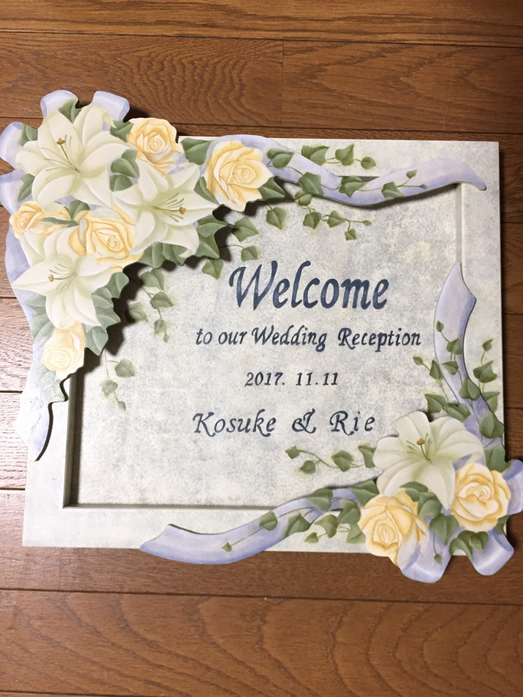
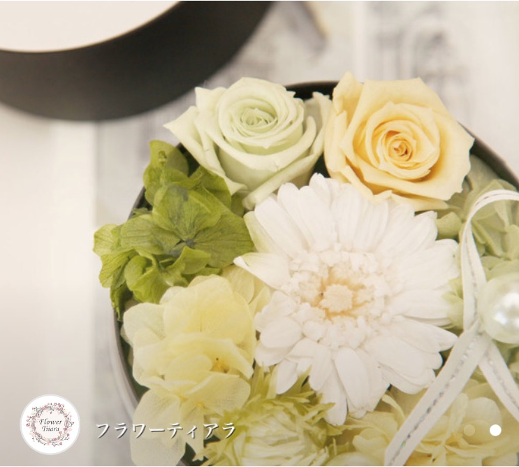

- 
-
ウェルカムボード
新婦母の手作りのトールペイントのウェルカムボード。披露宴の大分前から準備してくれていました。

-
サンキューボード
新郎母が切り絵で作成したサンキューボード
QRコードの部分も紙を切ってできていて、ちゃんと嫁込めます。もともと席次のプロフィールにいろいろ載せたいが紙面に限りがあるのをどうしようと言っていて、だったらサイト作ってアクセスできるようにしたらええんちゃうか？ということでこの形に。
- 
-
リングピロー
新婦母の手作りリングピロー。ドライフラワーがめちゃめちゃかわいいです！